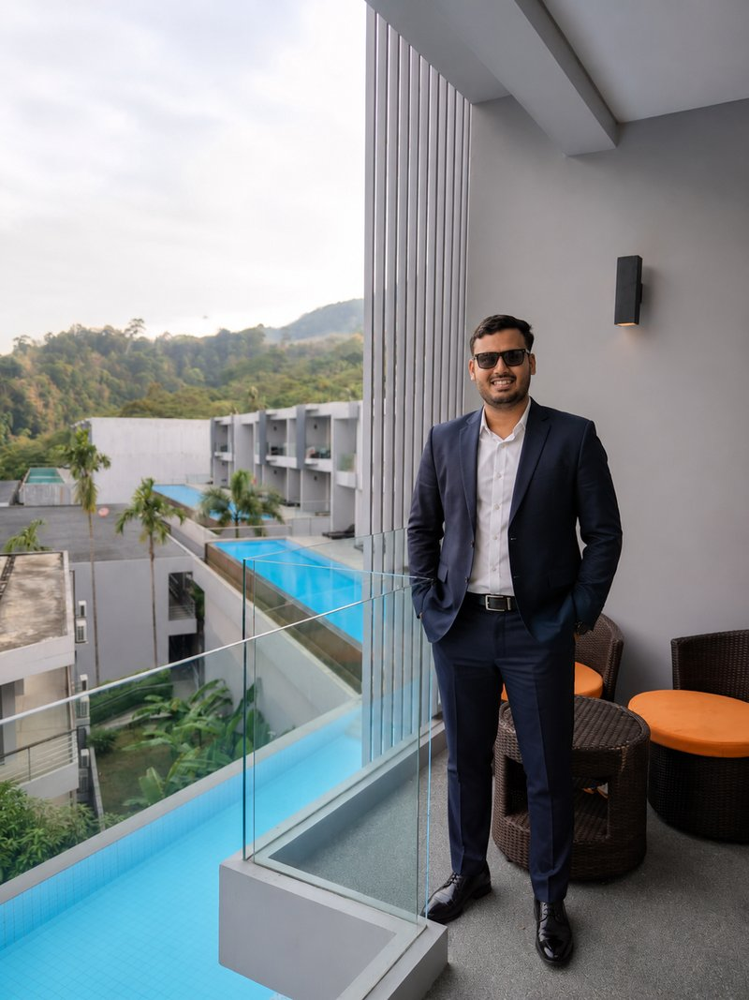

Mohit Dangi Architect is a Bhilwara-based architecture and design practice working across residential, commercial, and institutional projects throughout Rajasthan and India. The studio's work is grounded in context, climate, and craft — building thoughtful spaces that age well and feel inevitable.

Mohit Dangi is the founder and Principal Architect of the studio. A graduate of Poornima University with a Bachelor of Architecture (2015–2020) and a Master's in Urban Planning, City & Regional Planning (2021–2023), Mohit established the studio in 2020 with a single conviction — that architecture should respond honestly to where it stands, who it serves, and how it ages.
Before founding the studio, Mohit interned at Kuke Associates in Ahmedabad under Ar. Tanmay and Ar. Harshad, and earlier at S.R.S. Consultant in Bhilwara — experiences that shaped his approach to both detail-oriented design and ground-level construction realities.
The studio believes that good architecture is rarely loud. Every project begins with a conversation — with the site, the client, the climate, and the craft traditions of Rajasthan. Materials are chosen for honesty and longevity. Light is treated as a design material. Plans are organized around the rituals of daily life.
The result is architecture that doesn't seek attention but rewards the time you spend with it.
The studio works across eight interrelated disciplines — Architecture, Interior Design, Exterior Design, Landscaping, Master Planning, 3D Modelling & Rendering, Vaastu Consultancy, and Turnkey Site Supervision. This integrated approach allows for consistent design intent from the masterplan down to the door handle.
The team is small by choice, allowing every project to receive direct attention from the principal architect — from first sketch to final handover.
The studio's work spans residential bungalows, commercial banquet halls, corporate offices, and large-scale family homes — many anchored in and around Bhilwara. With a growing portfolio of 200+ delivered projects, the practice has built a reputation for thoughtful, climate-responsive, and contextually-rooted contemporary design.